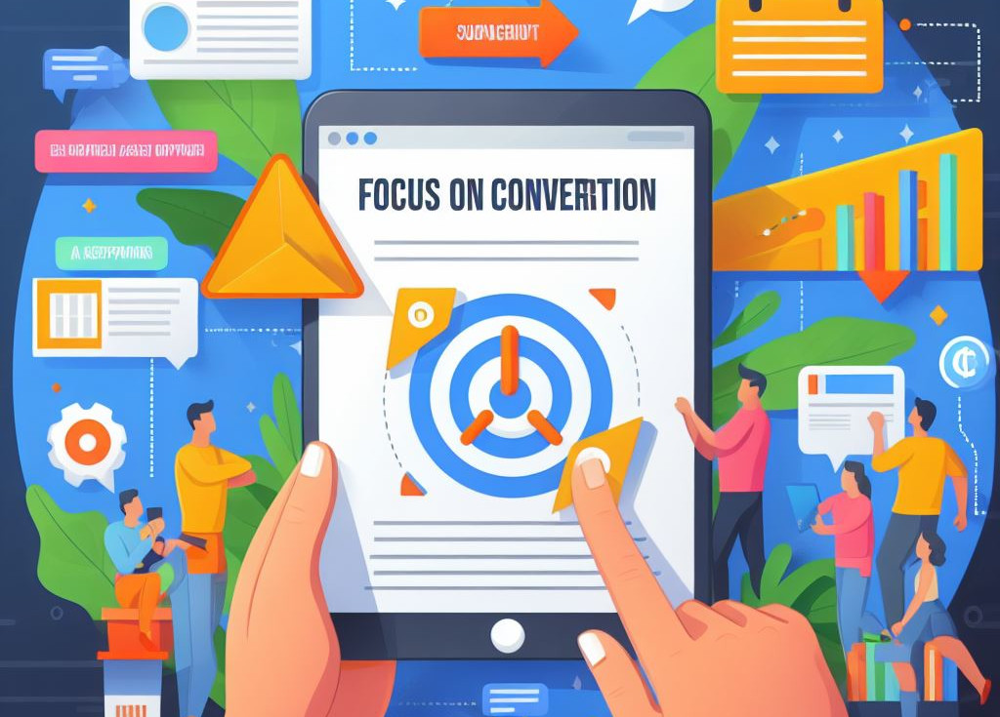
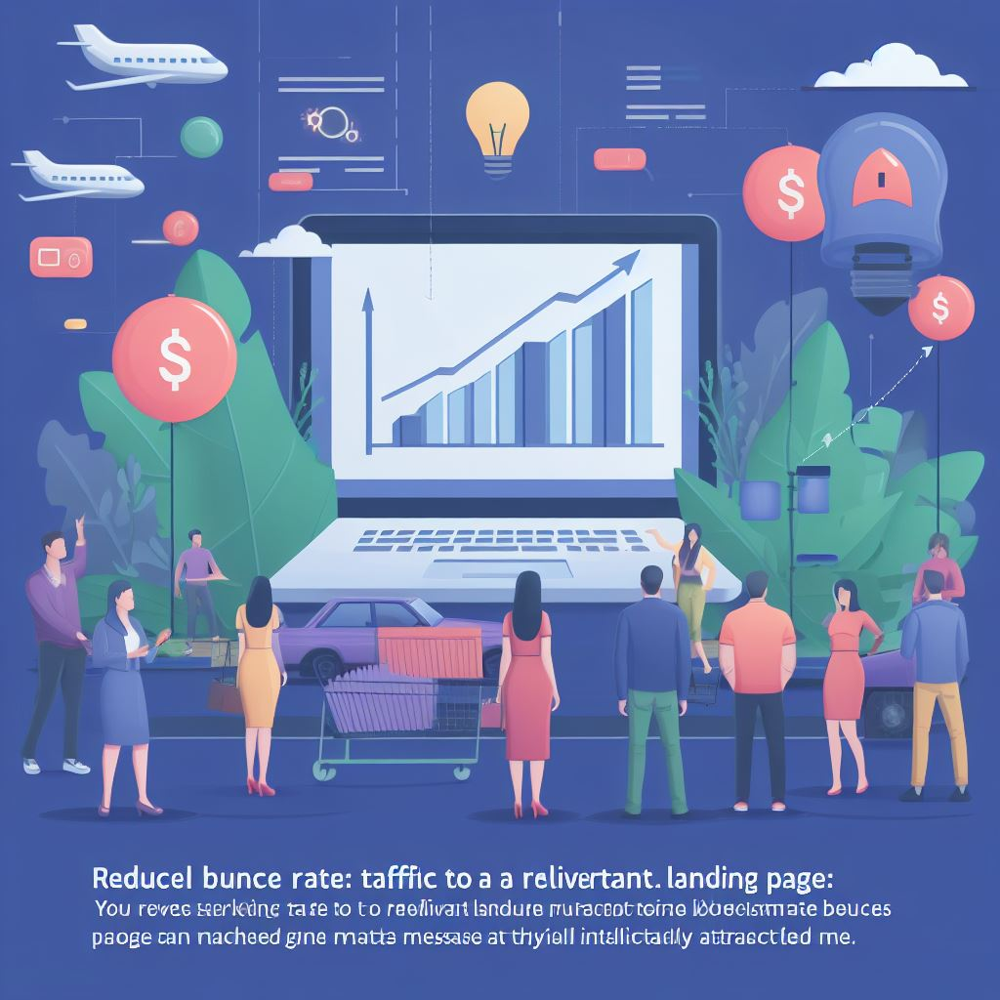

Landing pages
Uma landing page desempenha um papel crucial em várias estratégias de marketing digital e é muito importante para seu negócio!
Foco na Conversão: A principal finalidade de uma landing page é converter visitantes em leads, clientes, assinantes ou em outra ação específica desejada. Diferentemente de um site tradicional, que pode ter várias distrações, uma landing page é projetada para manter o foco na conversão.
Geração de Leads: Uma landing page bem projetada pode ser uma ferramenta eficaz para capturar informações de contato de visitantes interessados. Isso é valioso para empresas, pois cria uma lista de leads que podem ser nutridos e convertidos posteriormente.
Melhor Rastreamento e Análise: Como uma landing page tem um objetivo específico e claro, é mais fácil rastrear e analisar seu desempenho. Isso permite que as empresas compreendam o que funciona e o que precisa ser melhorado em suas estratégias de marketing.
Personalização da Mensagem: As landing pages podem ser personalizadas para atender a diferentes segmentos de público ou campanhas. Isso permite que você adapte a mensagem, os elementos visuais e os apelos à ação para corresponder às necessidades e interesses específicos de diferentes grupos de visitantes.
Redução de Taxas de Rejeição: Ao direcionar o tráfego de marketing para uma landing page relevante, você reduz a taxa de rejeição, pois os visitantes são direcionados para uma página que corresponde à mensagem que os atraiu inicialmente.
Aumento da Conversão e Vendas: Ao eliminar distrações e fornecer informações relevantes, convincentes e diretas, as landing pages aumentam a probabilidade de os visitantes concluírem a ação desejada, seja ela fazer uma compra, fazer um download ou preencher um formulário.